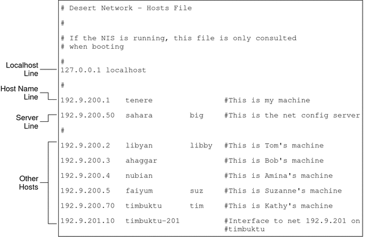

Previous
Previous
How Name Services Affect the hosts Database
The NIS and DNS name services, and LDAP directory service, maintain host names and addresses on one or more servers. These servers maintain hosts databases that contain information for every host and router (if applicable) on the servers' network. Refer to System Administration Guide: Naming and Directory Services (DNS, NIS, and LDAP) for more information about these services.
When Local Files Provide the Name Service
On a network that uses local files for the name service, systems that run in local files mode consult their individual /etc/inet/hosts files for IPv4 addresses and host names of other systems on the network. Therefore, these system's /etc/inet/hosts files must contain the following:
Loopback address
IPv4 address and host name of the local system (primary network interface)
IPv4 address and host name of additional network interfaces that are attached to this system, if applicable
IPv4 addresses and host names of all hosts on the local network
IPv4 addresses and host names of any routers that this system must know about, if applicable
IPv4 address of any system your system wants to refer to by its host name
Figure 10-1 shows the /etc/inet/hosts file for system tenere. This system runs in local files mode. Notice that the file contains the IPv4 addresses and host names for every system on the 192.9.200 network. The file also contains the IPv4 address and interface name timbuktu-201. This interface connects the 192.9.200 network to the 192.9.201 network.
A system that is configured as a network client uses the local /etc/inet/hosts file for its loopback address and IPv4 address.
Figure 10-1 /etc/inet/hosts File for a System Running in Local Files Mode
netmasks Database
You need to edit the netmasks database as part of network configuration only if you have set up subnetting on your network. The netmasks database consists of a list of networks and their associated subnet masks.
Note - When you create subnets, each new network must be a separate physical network. You cannot apply subnetting to a single physical network.
What Is Subnetting?
Subnetting is a method for maximizing the limited 32-bit IPv4 addressing space and reducing the size of the routing tables in a large internetwork. With any address class, subnetting provides a means of allocating a part of the host address space to network addresses, which lets you have more networks. The part of the host address space that is allocated to new network addresses is known as the subnet number.
In addition to making more efficient use of the IPv4 address space, subnetting has several administrative benefits. Routing can become very complicated as the number of networks grows. A small organization, for example, might give each local network a class C number. As the organization grows, the administration of a number of different network numbers could become complicated. A better idea is to allocate a few class B network numbers to each major division in an organization. For example, you could allocate one Class B network to Engineering, one Class B to Operations, and so on. Then, you could divide each class B network into additional networks, using the additional network numbers gained by subnetting. This division can also reduce the amount of routing information that must be communicated among routers.
Creating the Network Mask for IPv4 Addresses
As part of the subnetting process, you need to select a network-wide netmask. The netmask determines how many and which bits in the host address space represent the subnet number and how many and which bits represent the host number. Recall that the complete IPv4 address consists of 32 bits. Depending on the address class, as many as 24 bits and as few as 8 bits can be available for representing the host address space. The netmask is specified in the netmasks database.
If you plan to use subnets, you must determine your netmask before you configure TCP/IP. If you plan to install the operating system as part of network configuration, the Solaris installation program requests the netmask for your network.
As described in Designing an IPv4 Addressing Scheme, 32-bit IP addresses consist of a network part and a host part. The 32 bits are divided into 4 bytes. Each byte is assigned to either the network number or the host number, depending on the network class.
For example, in a class B IPv4 address, the 2 bytes on the left are assigned to the network number, and the 2 bytes on the right are assigned to the host number. In the class B IPv4 address 172.16.10, you can assign the 2 bytes on the right to hosts.
If you are to implement subnetting, you need to use some of the bits in the bytes that are assigned to the host number to apply to subnet addresses. For example, a 16-bit host address space provides addressing for 65,534 hosts. If you apply the third byte to subnet addresses and the fourth byte to host addresses, you can address up to 254 networks, with up to 254 hosts on each network.
The bits in the host address bytes that are applied to subnet addresses and those applied to host addresses are determined by a subnet mask. Subnet masks are used to select bits from either byte for use as subnet addresses. Although netmask bits must be contiguous, they need not align on byte boundaries.
The netmask can be applied to an IPv4 address by using the bitwise logical AND operator. This operation selects out the network number and subnet number positions of the address.
Netmasks can be explained in terms of their binary representation. You can use a calculator for binary-to-decimal conversion. The following examples show both the decimal and binary forms of the netmask.
If a netmask 255.255.255.0 is applied to the IPv4 address 172.16.41.101, the result is the IPv4 address of 172.16.41.0.
172.16.41.101 & 255.255.255.0 = 172.16.41.0
In binary form, the operation is as follows:
10000001.10010000.00101001.01100101 (IPv4 address)
ANDed with
11111111.11111111.11111111.00000000 (netmask)
Now the system looks for a network number of 172.16.41 instead of a network number of 172.16. If your network has the number 172.16.41, that number is what the system checks for and finds. Because you can assign up to 254 values to the third byte of the IPv4 address space, subnetting lets you create address space for 254 networks, where previously space was available for only one.
If you are providing address space for only two additional networks, you can use the following subnet mask:
255.255.192.0
This netmask provides the following result:
11111111.11111111.1100000.00000000
This result still leaves 14 bits available for host addresses. Because all 0s and 1s are reserved, at least 2 bits must be reserved for the host number.
/etc/inet/netmasks File
If your network runs NIS or LDAP, the servers for these name services maintain netmasks databases. For networks that use local files for the name service, this information is maintained in the /etc/inet/netmasks file.
Note - For compatibility with BSD-based operating systems, the /etc/netmasks file is a symbolic link to /etc/inet/netmasks.
The following example shows the /etc/inet/netmasks file for a class B network.
Example 10-3 /etc/inet/netmasks File for a Class B Network
# The netmasks file associates Internet Protocol (IPv4) address # masks with IPv4 network numbers. # # network-number netmask # # Both the network-number and the netmasks are specified in # "decimal dot" notation, e.g: # # 128.32.0.0 255.255.255.0 192.168.0.0 255.255.255.0 |
If the /etc/netmasks file does not exist, create it with a text editor. Use the following syntax:
network-number netmask-number |
Refer to the netmasks(4) man page for complete details.
When creating netmask numbers, type the network number that is assigned by the ISP or Internet Registry (not the subnet number) and the netmask number in /etc/inet/netmasks. Each subnet mask should be on a separate line.
For example:
128.78.0.0 255.255.248.0 |
You can also type symbolic names for network numbers in the /etc/inet/hosts file. You can then use these network names instead of the network numbers as parameters to commands.